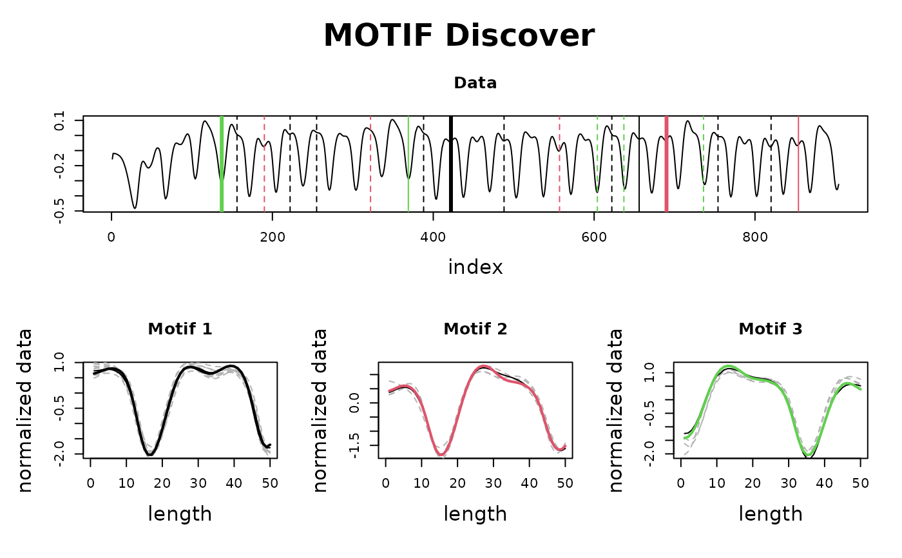

The base Classes are MatrixProfile and MultiMatrixProfile, but as other functions are used,
classes are pushed behind, since the last output normally is the most significant. If you want,
for example, to plot the Matrix Profile from a Fluss object, you may use as.matrixprofile()
to cast it back.
as.matrixprofile(.mp)
as.multimatrixprofile(.mp)
as.pmp(.mp)
as.valmod(.mp)
as.fluss(.mp)
as.chain(.mp)
as.discord(.mp)
as.motif(.mp)
as.multimotif(.mp)
as.arccount(.mp)
as.salient(.mp)a TSMP object.
Returns the object with the new class, if possible.
as.matrixprofile(): Cast an object changed by another function back to MatrixProfile.
as.multimatrixprofile(): Cast an object changed by another function back to MultiMatrixProfile.
as.pmp(): Cast an object changed by another function back to PMP.
as.valmod(): Cast an object changed by another function back to MultiMatrixProfile.
as.fluss(): Cast an object changed by another function back to Fluss.
as.chain(): Cast an object changed by another function back to Chain.
as.discord(): Cast an object changed by another function back to Discord.
as.motif(): Cast an object changed by another function back to Motif.
as.multimotif(): Cast an object changed by another function back to MultiMotif.
as.arccount(): Cast an object changed by another function back to ArcCount.
as.salient(): Cast an object changed by another function back to Salient.
w <- 50
data <- mp_gait_data
mp <- tsmp(data, window_size = w, exclusion_zone = 1 / 4, verbose = 0)
mp <- find_motif(mp)
class(mp) # first class will be "Motif"
#> [1] "Motif" "MatrixProfile"
plot(mp) # plots a motif plot

plot(as.matrixprofile(mp)) # plots a matrix profile plot